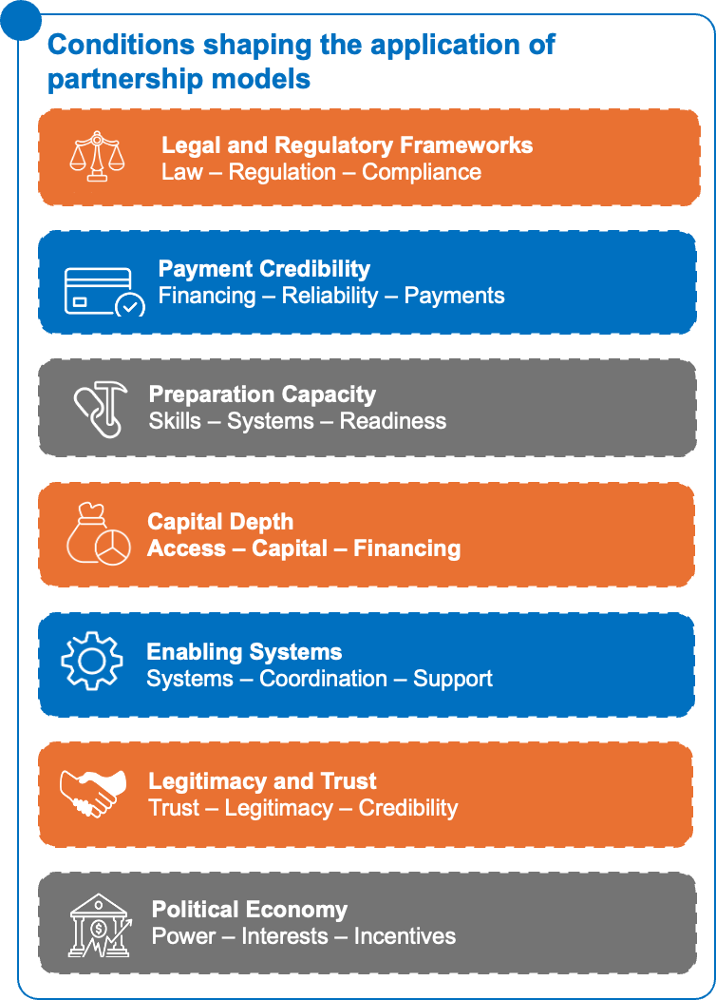

12.1 Adaptation is not model selection
The selection of Model 1 (Aggregation and Warehousing Platforms), Model 2 (Integrated Project Preparation and Guarantee Platforms), or Model 3 (Predictable Delivery Networks) should not be determined by country classifications or readiness scores.
Models are selected based on the specific constraint or opportunity they are intended to address. Multiple models may therefore be relevant within the same country, sector, or implementation environment.
Country context does not determine which model should be chosen. Instead, it helps users understand the conditions that may influence implementation, feasibility, sequencing, risk, and overall effectiveness.
The purpose of country adaptation is therefore to answer a practical question: what conditions must be strengthened, sequenced, coordinated, or de-risked for the selected model to work in this context?
Figure 21: Seven contextual conditions that shape how partnership models are sequenced, adapted, and implemented.Figure 21: Seven contextual conditions that shape how partnership models are sequenced, adapted, and implemented.12.2 Conditions shaping the application of partnership models

Country context does not determine which model should be selected, but it can influence whether a model can be implemented successfully. Before applying a model, stakeholders should assess the factors that may support or constrain implementation and identify what may need to be strengthened, coordinated, or de-risked.
Legal and Regulatory Frameworks
The legal and regulatory environment can directly affect implementation. Clear regulations, predictable approval processes, and effective contract enforcement can support implementation and encourage participation from public and private actors. Conversely, regulatory uncertainty, administrative delays, or conflicting policies can slow progress and increase implementation risks. Stakeholders should assess whether existing regulations support the proposed intervention and whether policy or regulatory barriers need to be addressed.
Payment Credibility
Many partnership models depend on reliable financial flows and predictable payment arrangements. Delayed payments, uncertain funding commitments, or weak financial management systems can undermine implementation and reduce confidence among partners and investors. Stakeholders should assess whether payment obligations are likely to be met and whether financing arrangements are sufficiently reliable to sustain implementation over time.
Preparation Capacity
The success of a model often depends on the ability of institutions and organizations to prepare, manage, and implement projects effectively. Weak project preparation, limited technical expertise, or insufficient management capacity can delay implementation and reduce impact. Stakeholders should assess whether the necessary skills, systems, and resources are available and identify any capacity gaps that may need to be addressed before implementation begins.
Capital Depth
Access to financing can significantly influence the scale and speed of implementation. In some contexts, sufficient capital may be available through commercial banks, investors, donors, or development finance institutions. In others, limited financing options may constrain implementation or require additional risk-sharing mechanisms. Understanding the financing landscape helps stakeholders determine whether adequate funding can be mobilized and sustained.Localization and African Ownership
The extent to which implementation strengthens local institutions, domestic capital participation, local enterprises, and long-term ownership can influence both sustainability and scale. While localization and African ownership do not determine which model is selected, they can affect how a model is financed, governed, implemented, and sustained over time.
Stakeholders should assess who is leading implementation, whether local SMEs, providers, and institutions are being strengthened, whether domestic sources of capital can participate, and whether accountability mechanisms remain close to the communities affected by the intervention. They should also consider who will own and govern the platform, network, asset, or capability over the long term, and whether the approach reduces or deepens dependence on external actors.
Understanding these dynamics helps stakeholders assess whether implementation will contribute to stronger local systems, deeper domestic capital participation, greater institutional resilience, and more sustainable ownership outcomes over time.
Enabling Systems
Effective implementation often depends on supporting systems such as coordination mechanisms, data systems, monitoring processes, procurement arrangements, and implementation partnerships. Even when a model is well designed, weak supporting systems can create delays and inefficiencies. Stakeholders should assess whether the necessary systems are in place to support implementation and identify areas that require strengthening.
Legitimacy and Trust
Implementation is more likely to succeed when institutions and organizations are perceived as credible and trustworthy by stakeholders and beneficiaries. Low levels of trust can reduce participation, weaken collaboration, and create resistance to change. Stakeholders should consider whether key actors have the legitimacy required to lead implementation and whether additional efforts are needed to build confidence and stakeholder buy-in.
Political Economy
Political priorities, institutional incentives, and stakeholder interests can influence implementation outcomes. Even technically sound interventions may face challenges if they conflict with existing interests or lack sufficient political support. Understanding the political and institutional landscape can help stakeholders anticipate risks, manage resistance, and sequence implementation more effectively.
Taken together, these factors influence implementation feasibility, risk, sequencing, sustainability, domestic participation, and long-term ownership. Assessing them early can help stakeholders identify what conditions need to be strengthened before applying a model in a specific context.
12.3 Illustrative country considerations
The following illustrate how different structural conditions within and across countries shape how a model is executed. Kenya, Ethiopia, and Senegal are not presented as prescriptive cases or “better” environments for any given approach. Instead, they highlight how context influences the design, sequencing, and implementation of the same underlying model.
The intent is to show that, even when objectives are aligned, execution conditions can vary significantly – meaning a single model can take very different forms in practice depending on where and how it is deployed.
Kenya: a more advanced ecosystem but characterized by fragmentation and platform competition
Kenya illustrates an environment where certain market components are already relatively mature, particularly in digital finance, innovation, and the presence of private-sector actors.
This generally enables faster model execution, but it also introduces specific challenges:
- Strong presence of multiple actors (public, private, fintechs, NGOs), which can create coordination and duplication issues.
- Risk of solution fragmentation, where multiple platforms coexist without meaningful integration.
- Competition for the same flows (funding, beneficiaries, data), which can reduce the efficiency of integrated models.
- Relatively strong ecosystem capacity, but high dependence on governance and alignment mechanisms.
Ethiopia: strong public coordination but market and capacity constraints
Ethiopia illustrates a context where the state plays a strong structuring role, with significant planning capacity, but where certain market conditions remain limited.
Implications for model execution include:
- Strong centrality of public actors in structuring and validating interventions.
- Implementation capacity that is sometimes concentrated but uneven across sectors and regions.
- Limited access to capital and guarantee mechanisms, often requiring external strengthening.
- Markets still under development, which may slow deployment but improve strategic alignment.
Senegal: an intermediate environment with strong reliance on partnerships
Senegal can be understood as an intermediate context, where relatively stable institutional dynamics coexist with an ecosystem that is still developing.
This translates into:
- High importance of partnerships between public actors, donors, and the private sector.
- Existing institutional capacity but sometimes constrained by resources and coordination challenges.
- Presence of pilot initiatives, but difficulty scaling without strong structuring mechanisms.
- Strong dependence on the quality of upfront project design.
12.4 Cross - system implications
Across all three models, performance is primarily determined by system conditions, not design. CSOs, donors, DFIs, and institutional actors should apply a consistent system readiness check before deployment and during scale-up.
System readiness
Verify whether the enabling infrastructure is in place for execution. This includes functional administrative systems, usable data and digital infrastructure, and the ability for actors to exchange information and coordinate in practice. Where this backbone is weak, models will not operationalize effectively.
Coordination reality
Test how coordination works in practice, not on paper. Confirm whether actors actually align across government, CSOs, donors, and private sector, or whether coordination remains project-based and informal. Weak coordination leads to duplication and parallel systems.
Financial flow reliability
Ensure financial flows are predictable, timely, and executable. Assess whether disbursement systems function without structural delays and whether funding can move efficiently across implementing layers. Unreliable flows directly degrade execution quality.
Implementation capacity
Confirm where execution capacity sits and whether it matches delivery requirements. Many systems have strong central capacity but weak subnational implementation. Where capacity is uneven, scaling will not translate into performance.
Incentive alignment
Assess whether institutional incentives support coordination or fragmentation. Misaligned incentives across public institutions, donors, and CSOs remain a primary driver of system inefficiency even when coordination frameworks exist.
Governance clarity
Verify that decision rights, execution responsibility, and accountability are clearly assigned. Where governance is ambiguous or distributed without coordination authority, systems default to ad hoc decision-making and slow problem resolution.
Sequencing logic
Test whether the system is ready for scale or requires foundational strengthening first. Premature scaling of pilots without validated systems, interoperability, or capacity readiness increases the probability of failure.
Risk patterns
Identify dominant system failure risks before deployment. These typically include fragmentation, weak preparation, coordination breakdown, scaling failure, or financial instability. Risk identification should directly inform design and sequencing choices.
Synthesis
Across all three models, the core discipline is system fit validation prior to deployment. The key question shifts from model selection to system readiness: what conditions must be in place for the model to function, scale, and sustain impact in this specific context.